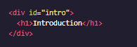
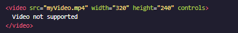

하이퍼텍스트를 가장 중요한 특징으로 하는 마크업형식을 가진 컴퓨터 프로그래밍 언어
- TAG
- 하이퍼텍스트와 Attributes(속성)

HTML의 기본구조는 content(raw text)를 시작태그와 닫히는태그로 감싸여져 있다.
※ 몇몇 태그는 닫히는태그가 없다 = Self-Closing ex) img br 등


TAG 뒤에 붙는 속성을 적용하여 세부적 기능제어
EX) id src width height controls
자식 TAG는 부모 TAG의 속성을 상속받는다. ex) ol과 ul TAG에 따라 li TAG가 달라짐
Ordinary List Tag
.png "ordinary Tag")
- Russia
- United States
- Canada
Unordinary List Tag
.png "unordinary Tag")
- Arctos
- Collarus
- Horribilis
- Nelsoni (extinct)
크게 DOCTYPE 설정과 HEAD태그 BODY태그로 구분

HTML파일의 기본표준타입으로 DOCTYPE설정
html태그 : 가장 상위부모태그
html태그 : 가장 상위부모태그
head태그 : 문서의 제목 및 저자 문서의 속성을 담아주는 태그
body태그 : 본문해당태그(Visual)
Review
")
- HTML = HyperTextMarkup Language → 웹사이트 제작시 사용 HTML + JavaScript or CSS
- 대부분 HTML elements는 opening tags와 closing tags로 이루어져있다 → 사이엔 raw text나 다른 HTML tag를 담는다.
- HTML은 상속의 특성을 가지고 있다 외부tag = 부모tag / 내부tag = 자식tag → 자식은 부모의 특성을 상속받는다.
- 눈에 보이는 대부분 element는 body 에 들어가있다 → 문서의 제목,저자를 기록한 문서의 속성은 head태그에 넣는다.
- p span div 태그는 글자를 블록화 시켜준다.
- h1~h6를 사용하여 heading (h 뒤의 숫자가 커질수록 소제목)
- em과 strong을 사용하여 강조표현
- br태그 = LineBreak = 다음행으로 넘김
- list는 ol(=ordinary)과 ul(=unordinary)태그가 있고, 자식태그로 li를 품는다.
- 이미지를 첨부시 img태그 비디오 첨부시 video태그
im의 Attrdution으로는 scr와 width height가 있다. (scr = "url") / 닫는Tag필요X
alt로 이미지로딩 실패시 대체텍스트 표시설정해주기
video의경우 img와 Attridution이 비슷하지만 닫는Tag가 필요하고 control 속성으로 사용자가 직접조정가능